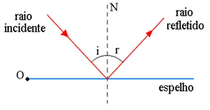
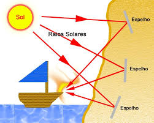
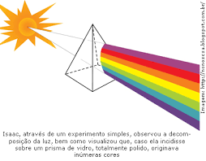
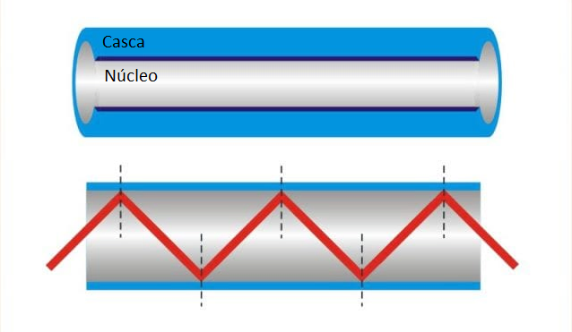

Reflexão
O Fenômeno da Reflexão
A reflexão da luz é o fenômeno pelo qual os raios luminosos, ao incidirem sobre uma superfície, retornam ao meio de origem. Esse fenômeno segue duas leis fundamentais:
- O raio incidente, o raio refletido e a reta normal à superfície estão no mesmo plano.
- O ângulo de incidência é igual ao ângulo de reflexão.
Componentes da Reflexão
- Raio Incidente: O feixe de luz que chega à superfície do espelho.
- Raio Refletido: O feixe de luz que é desviado pela superfície.
- Reta Normal: Uma linha imaginária perpendicular à superfície do espelho no ponto de incidência.
- Ângulos Iguais: O ângulo de incidência e o ângulo de reflexão possuem medidas idênticas.
Espelhos Planos
Os espelhos planos produzem imagens com características específicas. A imagem formada em um espelho plano possui as seguintes propriedades:
- Virtual: Não pode ser projetada em um anteparo, pois não está localizada no lado real do espelho.
- Direita: Mantém a mesma orientação vertical do objeto.
- Igual: Possui o mesmo tamanho do objeto refletido.
- Simétrica: A imagem é invertida lateralmente em relação ao objeto.
Exemplo de Reflexão
Figura 1: Ilustração de um raio incidente, refletido e a reta normal.
Aplicações no Cotidiano
A reflexão da luz é um fenômeno que pode ser observado em diversos contextos do dia a dia. Alguns exemplos incluem:
- Espelhos: Utilizados para refletir nossa imagem em banheiros, veículos e decoração.
- Periscópios: Dispositivos usados em submarinos que utilizam espelhos para direcionar a visão.
- Telescópios: Equipamentos que utilizam a reflexão em espelhos para ampliar a visualização de corpos celestes.
- Óptica: Na fabricação de lentes e dispositivos ópticos que dependem da reflexão da luz.
O Espelho Incendiário
O Fenômeno dos Espelhos
Os espelhos côncavos e convexos possuem propriedades óticas únicas que permitem manipular a luz de formas interessantes. Um desses fenômenos é o uso de espelhos para concentrar raios de luz em um ponto específico, como no caso dos espelhos incendiários.
Características dos Espelhos
- Espelho Côncavo: Converge os raios de luz, formando imagens ampliadas dependendo da posição do objeto.
- Espelho Convexo: Diverge os raios de luz, formando imagens menores e sempre virtuais.
- Foco de um Espelho: É o ponto onde os raios refletidos se encontram ou parecem se encontrar após a reflexão.
O Espelho de Arquimedes
O espelho de Arquimedes é uma lenda que ilustra o poder dos espelhos incendiários. Diz-se que o matemático grego Arquimedes usou grandes espelhos côncavos para concentrar a luz solar e incendiar os navios inimigos durante a defesa de Siracusa, por volta do século III a.C.
Embora a veracidade dessa história seja debatida, ela demonstra o potencial dos espelhos côncavos em concentrar energia luminosa em um ponto, gerando calor suficiente para causar combustão.
Exemplo Visual
Figura 1: Representação artística do espelho de Arquimedes.
Aplicações Modernas
Hoje, o princípio dos espelhos incendiários é utilizado em diversas áreas, como:
- Energia Solar: Espelhos côncavos são usados para concentrar raios solares em usinas solares térmicas, aquecendo líquidos que geram energia elétrica.
- Astronomia: Telescópios refletores utilizam espelhos côncavos para capturar e ampliar luz de objetos celestes.
- Defesa: Alguns experimentos modernos investigam o uso de concentradores de luz para fins militares.
O Prisma de Newton
Refração da Luz
A refração é o fenômeno que ocorre quando a luz muda de velocidade ao passar de um meio para outro, como do ar para a água ou para o vidro. Essa mudança de velocidade faz com que a luz se desvie, criando diferentes efeitos óticos.
Índice de Refração (n)
O índice de refração é uma grandeza que mede a relação entre a velocidade da luz no vácuo e a velocidade da luz em um determinado meio. Ele pode ser calculado pela fórmula:
n = c / v
Onde:
- n: Índice de refração
- c: Velocidade da luz no vácuo
- v: Velocidade da luz no meio
A Separação das Cores
Quando a luz branca atravessa um prisma, ela é dividida em várias cores, formando o arco-íris. Isso ocorre porque cada cor possui uma velocidade ligeiramente diferente no vidro, resultando em diferentes índices de refração. As cores mais refratadas (como o violeta) se desviam mais do que as menos refratadas (como o vermelho).
Exemplo Visual
Figura 1: Experimento de Isaac Newton mostrando a separação da luz em diferentes cores.
Aplicações da Refração
O estudo da refração é fundamental em várias áreas, como:
- Óptica: Construção de lentes e telescópios.
- Meteorologia: Formação de arco-íris na atmosfera.
- Comunicações: Uso de fibras ópticas para transmitir dados com eficiência.
As Fibras Ópticas
Lei de Snell-Descartes
A Lei de Snell-Descartes descreve o comportamento da luz ao passar de um meio para outro com diferentes índices de refração. A relação matemática é dada por:
n1 * Sen(i) = n2 * Sen(r)
Onde:
- n1: Índice de refração do meio inicial
- n2: Índice de refração do meio final
- i: Ângulo de incidência
- r: Ângulo de refração
Refração da Luz
Quando a luz atravessa a interface entre dois meios diferentes, ocorre o fenômeno da refração. Parte da luz é refletida de volta ao meio original (raio refletido), enquanto outra parte passa para o segundo meio (raio refratado).
Como Funcionam as Fibras Ópticas
As fibras ópticas utilizam o princípio da reflexão interna total para transmitir luz de forma eficiente. Isso ocorre quando o ângulo de incidência da luz é maior que 90°, fazendo com que ela seja continuamente refletida dentro do núcleo da fibra sem sair.
Exemplo Visual
Figura 1: Reflexão interna total em fibras ópticas.
Aplicações das Fibras Ópticas
As fibras ópticas têm diversas aplicações, como:
- Telecomunicações: Transmissão de dados com alta velocidade e eficiência.
- Medicina: Endoscópios para visualização interna do corpo humano.
- Iluminação: Sistemas de luz decorativos ou funcionais.
Lentes
Instrumentos Ópticos
As lentes são instrumentos ópticos fundamentais usados para manipular a luz. Elas são peças de material transparente que possuem superfícies curvas, capazes de desviar os raios de luz e formar imagens.
Tipos de Lentes
Existem dois tipos principais de lentes, classificadas de acordo com a forma de suas superfícies e o comportamento da luz:
- Convexa: Também conhecida como lente convergente, faz com que os raios de luz se concentrem em um ponto. É mais grossa no centro.
- Côncava: Também chamada de lente divergente, faz com que os raios de luz se espalhem. É mais fina no centro.
Comportamento Óptico
O comportamento das lentes pode ser descrito de duas formas principais:
- Divergente: Os raios de luz se afastam, formando imagens virtuais e menores.
- Convergente: Os raios de luz se encontram em um ponto, formando imagens reais ou virtuais, dependendo da posição do objeto.
Exemplo Visual

Figura 1: Representação de lentes convexas (convergentes) e côncavas (divergentes).
Aplicações das Lentes
As lentes têm uma ampla gama de aplicações práticas, incluindo:
- Óculos: Correção de problemas de visão como miopia e hipermetropia.
- Câmeras: Formação de imagens nítidas.
- Microscópios e Telescópios: Ampliação de objetos pequenos ou distantes.